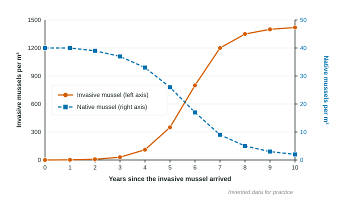

People move living things around the world, on purpose and by accident: crops, pets, garden plants, and stowaways in ships, crates and tires. Most of these newcomers never spread. A few take over. This page covers what makes a species invasive, how invaders harm ecosystems, the classic examples, and how to prevent and control them.
Nonnative is not the same as invasive
A nonnative (or exotic) species lives outside the range where it evolved, because people moved it. Wheat, honeybees and most garden flowers in North America are nonnative but cause little harm. An invasive species is a nonnative species that spreads rapidly and harms the ecosystem, the economy or human health.
Why some invaders succeed
Successful invaders usually share traits you met in Unit 3:
- Generalists: they eat many foods and tolerate a wide range of conditions, so they can live almost anywhere.
- r-selected: they mature early and produce many offspring, so a few arrivals become millions.
- Good at spreading: seeds, larvae or adults travel easily, often with people's help.
The new ecosystem helps too: the invader often meets none of the predators, parasites or diseases that kept it in check at home. But be careful on the exam. "No natural predators" describes the setting, not the species. When a question asks for a trait, name something about the organism, such as a high reproductive rate.
Reading an invasion in data

Invasions often follow the same shape: a slow start while the population is small, explosive growth, then leveling off near the new carrying capacity. Native species that compete for the same food and space decline at the same time. Note the two vertical axes: the invader reaches over 1,400 per m², while the native starts at 40.
Worked example. The native mussel fell from 40 per m² to 2 per m² in 10 years. What was the percent change?
Setup:
Answer: , a 95% decline.
If the lake bottom is 3,000 m², the invader's total in year 10 is
Classic examples
| Species | How it arrived | Harm |
|---|---|---|
| Zebra mussel | larvae in ships' ballast water from Europe, Great Lakes, late 1980s | filters out plankton that native species eat; smothers native mussels; clogs water intake pipes |
| Kudzu | planted across the southern US to control erosion | a fast vine that covers and shades out trees and native plants |
| Cane toad | brought to Australia in 1935 to eat cane beetles | ate little of the beetle; poisons native predators that eat it |
| Asian carp | escaped from fish farms into the Mississippi River system | outcompete native fish for plankton |
| Emerald ash borer | in wood packing material from Asia | has killed hundreds of millions of ash trees |
Kudzu and cane toads show a pattern worth remembering: a "solution" to one problem became a larger problem.
Prevention and control
- Prevention is cheapest: rules requiring ships to exchange or treat ballast water, inspections of imported wood and plants, and "clean, drain, dry" stations where boats leave a lake.
- Early detection and rapid response: removing an invader while it is still rare, before the explosive phase.
- Control once established: trapping, hand removal, targeted herbicides, and biological control, which introduces a natural enemy, but only after long testing so it does not become an invader too.
When a question says "other than chemicals", give a non-chemical action and say how it works: "Require boats to be cleaned and drained at the ramp, which removes mussel larvae before they reach the new lake."